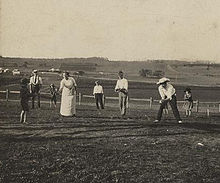
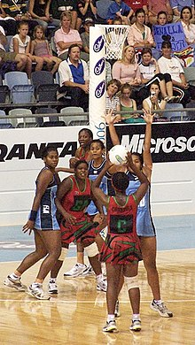

Rounders is a bat-and-ball game played between two teams. Rounders is a striking and fielding team game that involves hitting a small, hard, leather-cased ball with a wooden, plastic, or metal bat that has a rounded end. The players score by running around the four bases on the field.[2][3] Played in England since Tudor times, it is referenced in 1744 in the children's book A Little Pretty Pocket-Book where it was called Base-Ball.[4] The name baseball was superseded by the name rounders in England, while other modifications of the game played elsewhere retained the name baseball.[5] The game is popular among British and Irish school children, particularly among girls.[6][7][8] As of 2015 rounders is played by seven million children in the UK.[9] Gameplay centres on a number of innings, in which teams alternate at batting and fielding. Points (known as 'rounders') are scored by the batting team when one of their players completes a circuit past four bases without being put 'out'. The batter must strike at a good ball and attempt to run a rounder in an anti-clockwise direction around the first, second, and third base and home to the fourth, though they may stay at any of the first three.[6] A batter is out if the ball is caught; if the base to which they are running is touched with the ball; or if, while running, they are touched with the ball by a fielder.[6]
Netball is a ball sport played on a rectangular court by two teams of seven players. The primary objective is to shoot a ball (680 to 710 millimetres (27 to 28 in) in circumference) through the defender's goal ring (380 millimetres (15 in) in diameter mounted 3.05 metres (10.0 ft) high to a goal post at each end of the court) while preventing the opposing team from shooting through their own goal ring. It is one of a few sports created exclusively for women and girls and remains primarily played by them, on indoor and outdoor courts, especially in schools and most popularly in the Commonwealth of Nations. According to World Netball, the sport is played by more than 20 million people in more than 80 countries.[13][14] World Netball comprises more than 70 national teams organized into five global regions. Major domestic leagues in the sport include the Netball Superleague in Great Britain, Suncorp Super Netball in Australia and the ANZ Premiership in New Zealand. Four major competitions take place internationally: the quadrennial World Netball Championships, the Commonwealth Games, and the yearly Quad Series and Fast5 Series. In 1995, netball became an International Olympic Committee recognised sport federation, but it has not been played at the Olympics.